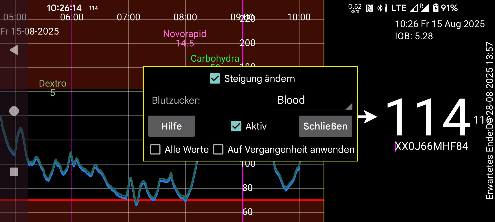

Juggluco 10.0.0 und höher bieten die Möglichkeit, Sensoren zu kalibrieren.
Blutzucker: Geben Sie an, welche Bezeichnung für die Blutzuckermessung per Fingerstich steht. Alle unter dieser Bezeichnung eingegebenen Blutzuckerwerte werden anschließend zur Kalibrierung verwendet, außer wenn Sie im linken mittleren Menü unter „Neue Menge“ die Option „Ausschließen“ auswählen. Ist die Änderungsrate (absolut) zu groß, wird sie automatisch ausgeschlossen.
Sie sollten nur Glukosewerte ausschließen, die für die Kalibrierung nicht geeignet sind, da der Glukosespiegel instabil ist. Alle anderen Werte sollten nicht ausgeschlossen werden, auch wenn Sie der Meinung sind, dass der Sensor nicht kalibriert werden muss. Wenn Sie keine Kalibrierung wünschen, deaktivieren Sie „Aktiv“ und „Kalibriert“ im rechten mittleren Menü. So werden alle geeigneten Glukosewerte für die Kalibrierung verwendet, nicht nur die, die nicht übereinstimmen.
Jeder neue Fingerstich, der nicht ausgeschlossen wird, führt zu einer neuen Kalibrierung. Sie können die durchgeführten Kalibrierungen einsehen, indem Sie im Sensorinformationsbildschirm auf „Kalibrierungen“ drücken. Sie gelangen zu den Sensorinformationen, indem Sie lange auf die Glukosekurve drücken oder im linken Menü auf „Sensor“ klicken. (Kalibrierungen sind sensorspezifisch.)
Wenn „Auf Vergangenheit anwenden“ nicht aktiviert ist, werden die Glukosewerte mit der letzten Kalibrierung vor dem Glukosewert kalibriert. Wenn „Auf Vergangenheit anwenden“ aktiviert ist, wird die letzte Kalibrierung auf alle Glukosewerte dieses Sensors angewendet.
Steigung ändern:
Wenn „Steigung ändern“ nicht aktiviert ist, wird zu jedem Sensorglukosewert nur ein bestimmter Wert addiert oder subtrahiert, um den kalibrierten Glukosewert zu erhalten. Das Verhältnis zwischen kalibriertem Wert und Sensorwert lautet:
Kalibrierter Glukosewert = SensorGlucose + b
Der Wert von b wird durch Kalibrierung bestimmt.
Wenn „Steigung ändern“ eingestellt ist, wird die Beziehung:
Kalibrierter Glukosewert = a * SensorGlucose + b
Wobei a von 1 verschieden sein kann.
Juggluco gewichtet Glukosemessungen abhängig von ihrem Alter. Der aktuelle Glukosewert hat das Gewicht 1, ältere Glukosewerte haben ein geringeres Gewicht. Die Kalibrierung wird ebenfalls gewichtet, sodass eine ältere Kalibrierung weniger Einfluss hat, sodass a mit der Zeit gegen 1 und b gegen 0 geht.
Die Gesamtgewichtung der verwendeten Blutzuckermessungen bestimmt, wie viel Gewicht der Kalibrierung beigemessen wird. Bei mehr (neueren) Blutzuckermessungen tendieren die kalibrierten Glukosewerte stärker zur besten Übereinstimmung zwischen Blutzucker und CGM-Glukose, die aus diesen Messungen abgeleitet wird.
History Werte können nicht sofort kalibriert werden. Die Kalibrierung ist für Libre-Sensoren 21 Minuten und für CareSense Air-Sensoren 31 Minuten später programmiert, erfolgt aber häufig später. Die Stream-kalibrierung wird zu einem späteren Zeitpunkt wiederholt, damit das nächste CGM-System verwendet werden kann.
Aktiv: Wenn „Aktiv“ eingestellt ist, werden die kalibrierten Glukosewerte für Alarme, Broadcast, Health Connect, den Nightscout/xDrip-Webserver in Juggluco, an Uhren gesendete Glukosewerte und Schwebende Glukose verwendet. Auf der rechten Seite von Juggluco wird der kalibrierte Wert in großer Schrift angezeigt, der unkalibrierte Wert dahinter in kleiner Schrift. Er wird nicht zum Senden an Libreview verwendet.
Die Anzeige der Kurve kalibrierter Glukosewerte wird im mittleren rechten Menü vor „Stream“ und „History“ aktiviert. Die Rohwerte werden über die Kontrollkästchen nach „Stream“ und „History“ ein- und ausgeschaltet.
Alle Werte: Für bestimmte Werte gibt es keinen kalibrierten Wert. Die Kurve der kalibrierten Werte (aktiviert über das rechte mittlere Menü → Kalibriert) zeigt nichts an, wenn „Alle Werte“ nicht aktiviert ist. Ist „Alle Werte“ aktiviert, wird der unkalibrierte Wert angezeigt. Sie können das rechte mittlere Menü → Stream deaktivieren und trotzdem alle Werte sehen.